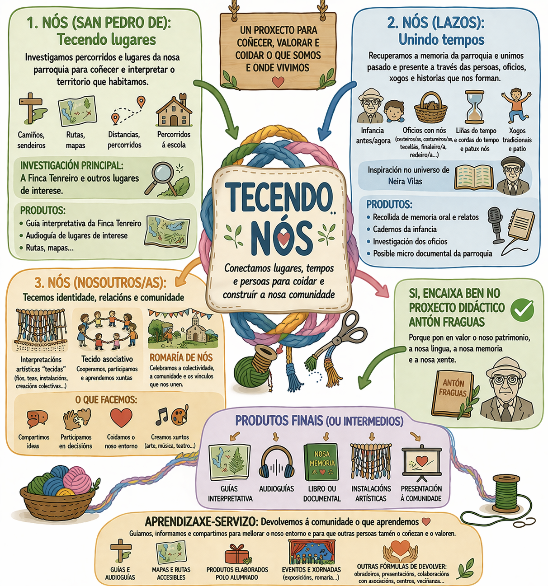

Tecendo Nós
Un espazo común para organizar, inspirar e documentar o PDI 2026-2027 desde o territorio, a memoria, a literatura e a comunidade.
Agora no tear
Primeira versión interna para profesorado. As achegas publícanse directamente e poden eliminarse desde administración.
prototipoIdea forza
O PDI non é unha actividade engadida: é un contexto común para desenvolver o currículo de cada etapa, área e ámbito.
currículoAcción rápida
Usa o botón de memoria ao rematar unha actividade. En xuño a memoria estará medio feita.
memoriaO PDI
Unha presentación útil para quen chega novo ao centro e para quen precisa integrar o proxecto na programación.
Que é?
Un Proxecto Documental Integrado de centro: biblioteca, aulas, áreas e comunidade traballan arredor dun contexto común de investigación, creación e comunicación.
Tres Nós
Territorio: San Pedro de Nós e Finca Tenreiro.
Lazos: memoria, oficios, xogos, tempos.
Comunidade: aprender, coidar e devolver.
Neira Vilas
Fío literario transversal: infancia, escola, lingua, cartas, xogos, familia, comunidade e memoria.
Metodoloxía
Observamos → Preguntamos → Investigamos → Creamos → Compartimos → Reflexionamos.

Balbordo de ideas
Imaxes, vídeos, ligazóns e propostas para inspirar. Calquera docente pode publicar directamente.
Recursos
Materiais listos para consultar, descargar ou adaptar.
Posibles produtos
Ideas asumibles: de aula, compartidas e de centro. Non son obrigas, son camiños.
A memoria
Documentar en cinco minutos. O que se vai facendo queda visible e pode inspirar ao resto.
Calendario xeral
Fases, datas sinaladas e fitos internos para manter un ritmo común.